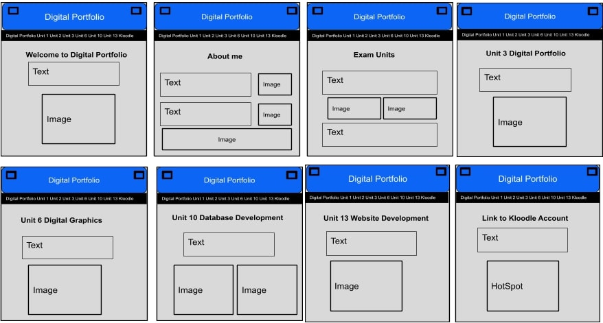
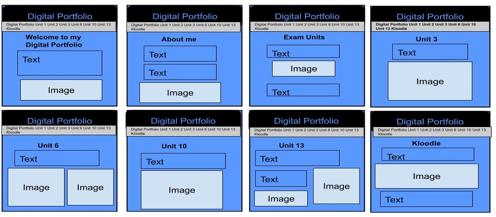
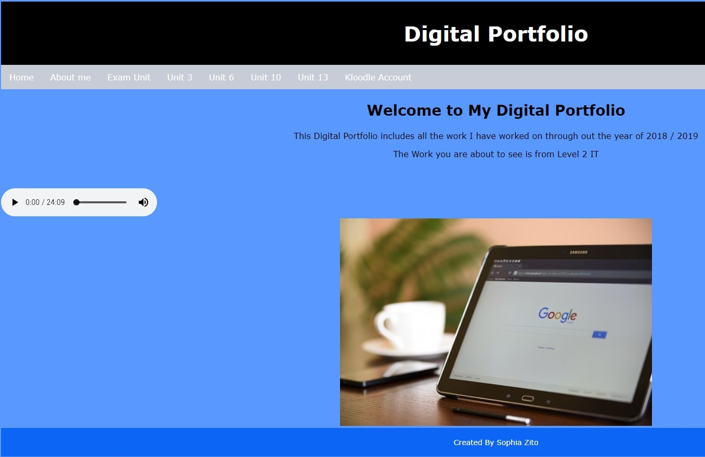

Well.. This website is for the digital portfolio unit, so you can already see the digital portfolio I have made for the unit.
Since you are already on the digital portfolio maybe I can show you the original designs I made on how I was going to create the website.
As you can see in the image the original design of the website fits the final made digital portfolio you are seeing now.
Some of the layout of the final digital portfolio is different to the design, as it was just a rough draft of what could I include and add to the site
This image of the alternative design I created for the digital portfolio. As you can see in the image the colour scheme is just swapper around slightly, using more of the blue and black and no grey
I found the colour scheme to be a bit too dark, and it might possible not have the same affect it should have for the digital portfolio
The colour scheme with the grey makes the digital portfolio look more professional and have a bigger impact on the users visiting the page.
I made a test site of the alternative Digital portfolio, this is what the digital portfolio would have looked like if I used the alternative design.
I think a picked the right choice using the first original design I created and to it now to be the design for the final digital portfolio.